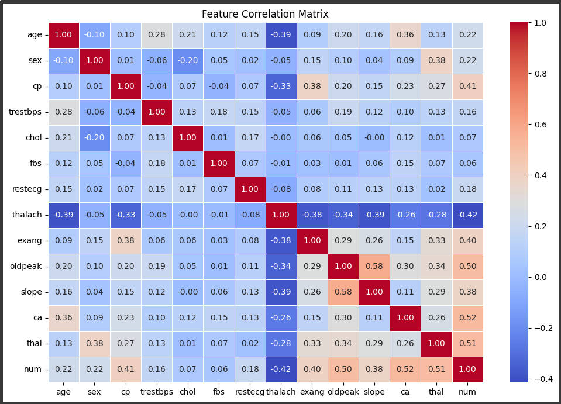
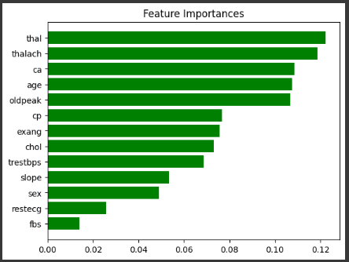

Data Science & Analytics / 2025
Heart Disease Prediction
An end-to-end machine learning project investigating heart disease prediction using clinical and demographic data. I explored data preprocessing, feature selection and classification techniques, comparing multiple models to understand their predictive performance and limitations.
Original dataset records
Classification approaches explored
Highest reported accuracy among the three traditional classifiers
01 / The Problem
Heart disease is an important healthcare challenge, and machine learning offers opportunities to investigate patterns within clinical data.
For this project, I wanted to explore whether patient characteristics and clinical measurements could be used to predict the presence of heart disease, and compare how different classification algorithms performed on the same dataset.
02 / My Approach
I used the Cleveland Heart Disease dataset from the UCI Machine Learning Repository, which contains 303 records and 14 attributes, including the target variable.
- Data exploration: Performed exploratory data analysis (EDA) using descriptive statistics and visualisations to examine feature distributions, class imbalance, outliers and relationships between clinical variables.
- Data preprocessing: Investigated missing values and handled them using mode imputation. Applied outlier treatment, log transformations and feature standardisation to prepare the dataset for modelling.
- Target encoding: Converted the original disease severity labels into a binary classification target representing the presence or absence of heart disease.
- Feature selection: Used Random Forest feature importance to rank predictors and identify features for the classification models.
- Model development: Trained and compared Logistic Regression, Support Vector Classifier and Random Forest. I also explored a Neural Network as an alternative modelling approach.
- Model evaluation: Evaluated classification performance using accuracy, precision and recall, with additional cross-validation experiments for the Neural Network.
Selected Exploratory Findings
I examined the distribution of the target variable and visualised relationships between the dataset features before building the models.


03 / Results & Findings
I compared Logistic Regression, Support Vector Classifier and Random Forest using accuracy, precision and recall.
The results reported in my project are presented below.
| Model | Accuracy | Precision | Recall |
|---|---|---|---|
| Logistic Regression | 83% | 0.90 | 0.70 |
| Support Vector Classifier | 83% | 0.90 | 0.70 |
| Random Forest | 84% | 0.88 | 0.75 |
Random Forest achieved the highest reported accuracy (84%) and recall (0.75) among the three traditional classifiers. Logistic Regression and SVC both achieved 83% accuracy, with slightly higher precision (0.90 compared with 0.88 for Random Forest).
This highlighted a trade-off between precision and recall. Although Random Forest identified a greater proportion of positive cases, its recall of 0.75 means approximately 25% of actual positive cases were not identified.
In a healthcare-related classification task, false negatives are particularly important. These results reinforced the need to evaluate models using more than accuracy alone.
I also experimented with a Neural Network and cross-validation, which were discussed separately in my original report.
Feature Importance
I used Random Forest feature importance to rank the input variables and explore which measurements appeared most influential within the model.

04 / Reflection & Limitations
This project strengthened my understanding of exploratory data analysis, feature engineering, supervised classification and model evaluation. Comparing different algorithms helped me appreciate the importance of selecting evaluation metrics based on the problem being addressed.
One important limitation is the small dataset size, which may affect how reliably the model generalises to unseen patient populations. The dataset also contains demographic imbalances that could influence model performance across different groups.
The original experimental workflow also had methodological limitations, including preprocessing steps performed before data splitting. This can introduce data leakage and potentially lead to optimistic performance estimates.
Although the project produced promising exploratory results, external validation and more representative data would be necessary before considering any real-world clinical application.
05 / Explore the Project
This case study summarises my January 2025 university project, including selected visuals and the original model comparison results.
The Cleveland Heart Disease dataset is publicly available through the UCI Machine Learning Repository.